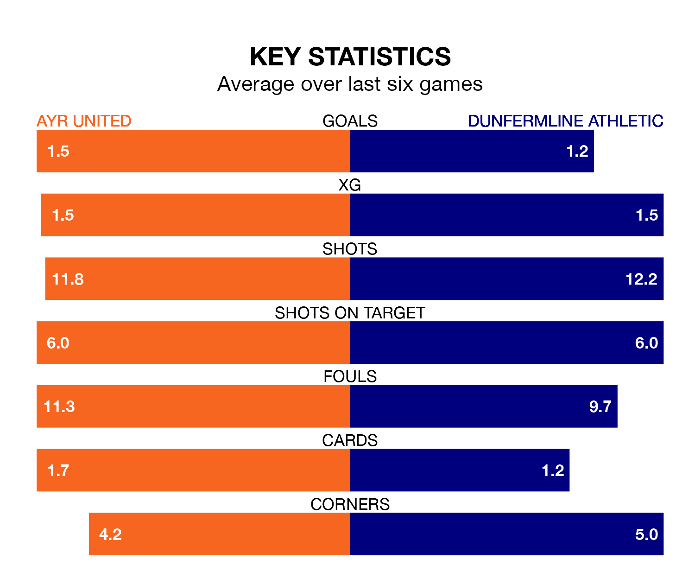

Dunfermline Athletic travel to Ayr United on late Friday in the Championship.
The visitors come into the game on the back of a draw in their last match, having tied with Inverness CT 1-1 at home, with a goal from Kyle Benedictus.
The Honest Men also drew their last match, 0-0 against Partick Thistle.
With 40 goals in 35 games so far this season, Dunfermline are the league's third-lowest scorers with 1.1 goals per game. But they are conceding fewer than average too, letting in 45 goals at a rate of 1.3 per game.
Ayr, meanwhile, are average scorers, with 1.4 goals per game. They have conceded 1.7 goals per game.
In the last 10 years, Ayr and Dunfermline have played each other on 29 occasions. Ayr won seven of them, Dunfermline 14, and they drew eight times.
On average, the Honest Men scored 0.9 goals and Dunfermline 1.3 in those matches.
Their last meeting was on March 2, when Dunfermline won 2-0 at home.
United's Jamie Murphy is among the league's most creative players, racking up 11 assists in 31 appearances so far this season, and holding second spot in the Championship's assist charts.
For Athletic, Joshua Edwards has set up the most goals, having laid on seven assists in 35 games.
The Honest Men are seventh in the table after 35 games, of which they have won 12 and drawn seven, earning 43 points.
The away side are one place ahead of the hosts in sixth, with 11 wins and 11 draws putting them on 44 points.
Ayr are in mixed form in the Championship, with two wins and two draws from their last six games.
With two wins and three draws over that period, Dunfermline's form is slightly better – they have taken nine points from 18, compared to Ayr's eight.
Updated: 10:44 (UTC), 30/04/24